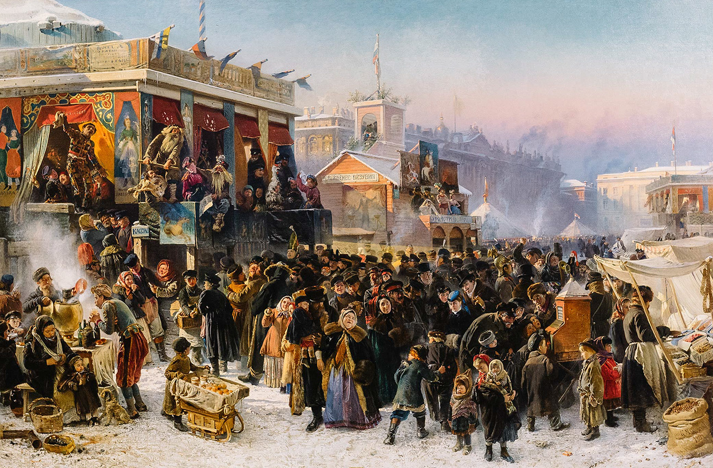
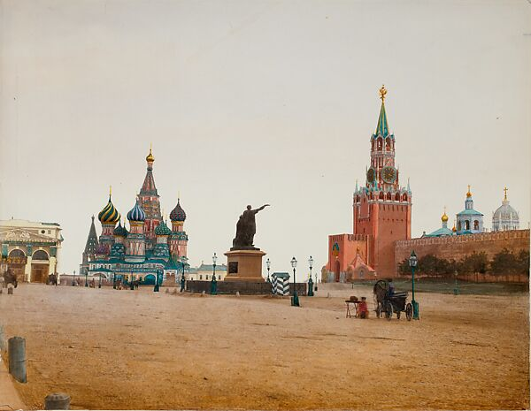

Moscow vs. St. Petersburg

The setting of Leo Tolstoy’s Anna Karenina shifts between two major Russian cities, Moscow and St. Petersburg. The distinction between Moscow and St. Petersburg is not merely geographical, but conceptual, illustrating a clear civic divide within nineteenth-century Russia. These two cities embody competing models of Russian aristocratic life in the decades following the Emancipation Reform of 1861. Tolstoy highlights the contrasts in authenticity and artificiality, tradition and modernity, and moral substance and social performance. He reflects his own values through his portrayal, acceptance, or critique of the two political systems.
In 1703, Peter the Great founded St. Petersburg as the “window to Europe.” He created a Table of Ranks, which reconfigured existing nobility into a service class. Rank and privilege, based on military achievements or bureaucratic credentials, redefined noble status. St. Petersburg functioned as the epicenter of this new reform. The city, ministries, and courts supported a strict hierarchy. This transformation marked a process of rapid Westernization
As St. Petersburg rose, Moscow remained stagnant. It provided a slower, more traditional way of life. Social status remained ingrained in old, noble families and landed estates. Even after the Emancipation Reform of 1861, Moscow and St. Petersburg elites diverged. In St. Petersburg, power came from imperial proximity, and it was standard for nobles to learn French. In Moscow, Russian traditions persisted. This divide reflects broader anxieties within Russian society about Westernization and national identity, as intellectuals struggled to reconcile European influence with native traditions (Offord 241). Tolstoy depicts the Moscow-St. Petersburg divides through the elites. In the novel, Moscow represents a semi-patriarchal, land-based aristocracy. St. Petersburg represents the Westernized imperial state, centered around bureaucracy. Moscow served as the cultural “heart” of Russia, while St. Petersburg stood for imposed modernization. Tolstoy leans toward Moscow’s values, but he does not fully idealize it. The distinction between these two environments contrasts a lifestyle rooted in native Russian orthodoxy and family with one defined by luxury and social performance (Lieven 134). With firsthand experience, Tolstoy expresses a skeptical view of St. Petersburg. His views of St. Petersburg and Moscow are expressed through setting, character, and narrative. Plots set in St. Petersburg include government offices and social gatherings that engender surveillance and behavioral codes. Tolstoy paints this city’s social life as formal and controlled, where characters adhere to a rigid code. The contrast between Moscow and St. Petersburg approximates a deeper divide between authentic Russian values and the artificial influence of the West. As the storyline develops, Tolstoy makes clear that these settings are not passive backdrops. They actively outline the lived experiences and outcomes of the characters within them. Anna Karenina’s husband, Alexei Karenin, is a high-ranking government official whose identity is largely shaped by his bureaucratic role. When he learns of Anna’s affair, he disregards emotion and instead prioritizes their reputation. His response reflects a mindset in which personal relationships are secondary to public perception. Anna herself is ultimately ostracized by St. Petersburg society, because she departs from its rigid norms. This response reflects the hypocrisy of St. Petersburg society, which condemns visible deviance while tolerating hidden immorality (Morson 57). The Moscow storylines function as an alternative to this superficiality in St. Petersburg. Konstantin Levin and Kitty Shcherbatskaya’s experiences emphasize sincerity, emotional transparency, and moral development. Kitty’s emotional journey, from romantic illusion to mature love, unfolds within this environment, suggesting that Moscow permits, and even fosters, personal growth. Dolly Oblonskaya further represents Russian tradition through her devotion to motherhood and family. Although she suffers from her husband’s infidelity, she chooses forgiveness. Tolstoy uses these characters to emphasize the Moscowvite values of duty, tradition, and close involvement in family and land (Roosevelt 157–58). He does not idealize Moscow, but he admires its relative authenticity and humanity. He makes clear that Moscow remains imperfect, but prioritizes family values and human relationships. Although Tolstoy displays Moscow in a more positive light than St. Petersburg, he nonetheless addresses Moscow’s flaws. Stiva Oblonsky’s unfaithfulness to Dolly is a recurring issue throughout the novel. Levin’s, Tolstoy’s autobiographical character, condemns this behavior. Furthermore, when Levin visits Oblonsky in Moscow, he spends excessive time at the club, gambling and drinking (Tolstoy 678–696). By comparing Moscow to Levin’s home in the countryside, Tolstoy illustrates Moscow’s shortcomings. The contrast between Moscow and St. Petersburg in Anna Karenina reflects the dichotomy between Russian tradition and European modernization. Moscow’s old, aristocratic traditions diverge from St. Petersburg’s modernity, social strata, and state bureaucracy. These tensions stemmed from mid-nineteenth century reforms, which transformed Russia from a society structured around serfdom into one increasingly defined by civic institutions and bureaucratic governance (Lincoln 62). Tolstoy shows how these settings shape his characters’ outcomes. Anna’s tragedy is tied to the suffocating social structure of St. Petersburg. Moscow, while equally aristocratic on the surface, allows for more visible family values. However, Tolstoy’s ideal is most closely achieved in the countryside. Tolstoy remains skeptical of Westernization and suggests that true morality is only found outside the structures of both cities.

Works Cited
- Lieven, Dominic. "Life, Manners, Morals." The Aristocracy in Europe, 1815–1914. 1992.
- Lincoln, W. Bruce. The Great Reforms: Autocracy, Bureaucracy, and the Politics of Change in Imperial Russia. 1990.
- Morson, Gary Saul. Anna Karenina in Our Time: Seeing More Wisely. Yale University Press, 2007.
- Offord, Derek. "The People." A History of Russian Thought, edited by William J. Leatherbarrow and Derek Offord, 2010.
- Roosevelt, Priscilla. Life on the Russian Country Estate: A Social and Cultural History. 1997.
- Tolstoy, Leo. Anna Karenina. Translated by Rosamund Bartlett, Oxford University Press, 2014.